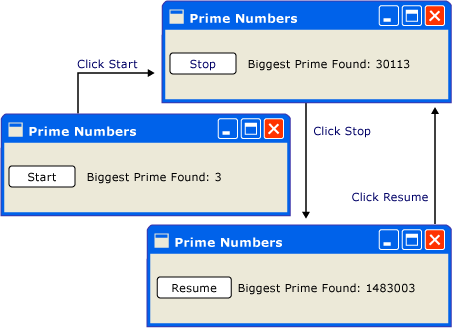
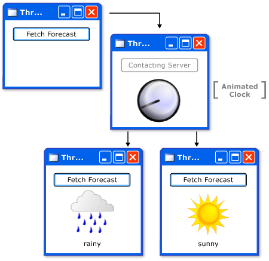
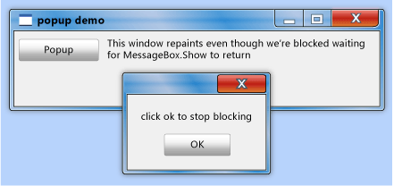
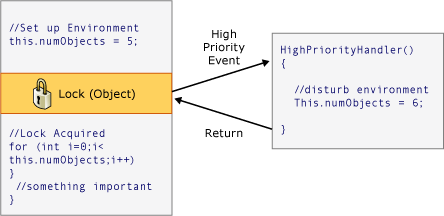

Модель потоков
Windows Presentation Foundation (WPF) призвана помочь разработчикам избежать трудностей при разработке потоков. Как следствие, большинство WPF разработчикам не требуется писать интерфейс, использующий более одного потока. Поскольку многопотоковые программы являются сложными и трудно отлаживаемыми, их следует избегать, если существуют однопоточные решения.
Независимо от того, насколько хорошо качества архитектуры, нет UI framework никогда не будут иметь возможность предоставить однопоточное решение для каждого типа задач. WPF приблизилось, но по-прежнему существуют ситуации, в которых несколько потоков улучшают UI скорость реагирования или производительность приложения. После рассмотрения некоторых основных материалов в данном документе рассматриваются подобные ситуации и в завершение обсуждаются некоторые более подробные сведения.
Note
В этом разделе обсуждается создание потоков с помощью BeginInvoke метод для асинхронных вызовов. Вы также можете асинхронных вызовов, вызвав InvokeAsync метод, который занять Action или Func<TResult> как параметр. InvokeAsync Возвращает DispatcherOperation или DispatcherOperation<TResult>, который имеет Task свойства. Можно использовать await ключевого слова with либо DispatcherOperation или связанного Task. Если требуется синхронно дождаться Task , возвращаемый DispatcherOperation или DispatcherOperation<TResult>, вызовите DispatcherOperationWait метода расширения. Вызов Task.Wait приведет к взаимоблокировке. Дополнительные сведения об использовании Task для выполнения асинхронных операций, см. в разделе параллелизм задач. Invoke Метод также имеются перегрузки, принимающие Action или Func<TResult> как параметр. Можно использовать Invoke вызывает синхронный метод, передав делегат, Action или Func<TResult>.
Общие сведения и Dispatcher
Как правило WPF приложения начинается с двух потоков: одного для обработки визуализации, а другой — для управления UI. Поток визуализации эффективно выполняется незаметно для пользователя в фоновом режиме при UI поток получает входные данные, обрабатывает события, выводит изображение на экран и выполняет код приложения. Большинство приложений используют один UI поток, несмотря на то, что в некоторых ситуациях лучше использовать несколько. Позже это будет рассмотрено на примере.
UI Очереди потоков рабочие элементы внутри объекта, называемого Dispatcher. Объект Dispatcher выбирает рабочие элементы на основе приоритетов и выполняет каждый из них до завершения. Каждый UI поток должен иметь по крайней мере Dispatcherи каждый Dispatcher может выполнять рабочие элементы только в одном потоке.
Условием для построения быстро реагирующих, понятных пользователю приложений является максимальное повышение Dispatcher пропускной способности путем сохранения небольших рабочие элементы. Таком методе элементы никогда не устаревают Dispatcher очереди, ожидающих обработки. Любая задержка между входными данными и ответами может разочаровать пользователя.
Как в таком WPF приложения должны обрабатывать большие операции? Что если код включает большие вычисления или требуется запрос к базе данных на удаленном сервере? Обычно ответ заключается в большие операции обрабатываются в отдельном потоке, оставляя UI поток для обслуживания элементов в Dispatcher очереди. После завершения большой операции она может передать результат обратно UI поток для отображения.
Исторически сложилось так, что Windows позволяет UI элементов был доступен только создавшему их потоку. Это означает, что фоновый поток, отвечающий за некоторую длительную задачу, не может обновить текстовое поле при своем завершении. Windows Это делается, чтобы обеспечить целостность UI компонентов. Список может выглядеть странно, если его содержимое обновляется фоновым потоком в процессе отображения.
WPF имеет встроенный механизм взаимного исключения, осуществляет эту координацию. Большинство классов в WPF являются производными от DispatcherObject. При конструировании DispatcherObject хранит ссылку на Dispatcher связанный с текущим выполняемым потоком. По сути DispatcherObject связывается с потоком, который его создал. Во время выполнения программы DispatcherObject может вызвать свой открытый VerifyAccess метод. VerifyAccess проверяет Dispatcher связанный с текущим потоком и сравнивает его Dispatcher ссылка сохраняется во время создания. Если они не совпадают, VerifyAccess возникло исключение. VerifyAccess предназначен для вызова в начале каждого метода, принадлежащего к DispatcherObject.
Если только один поток может изменить UI, как фоновые потоки взаимодействуют с пользователем? Фоновый поток может попросить UI поток, выполняющий операцию от его имени. Это достигается путем регистрации рабочего элемента с Dispatcher из UI потока. Dispatcher Класс предоставляет два метода для регистрации рабочих элементов: Invoke и BeginInvoke. Оба метода назначают делегат для выполнения. Invoke является синхронным вызовом — то есть он не возвращает до UI потока не закончит выполнение делегата. BeginInvoke является асинхронным и немедленно возвращает.
Dispatcher Упорядочивает элементы в своей очереди по приоритету. Существуют десять уровней, которые могут быть указаны при добавлении элемента к Dispatcher очереди. Эти приоритеты сохраняются в DispatcherPriority перечисления. Подробные сведения о DispatcherPriority уровней можно найти в Windows SDK документации.
Потоки в действии: Примеры
Пример однопоточного приложения с длительным выполнением вычислений
Большинство графические пользовательские интерфейсы (GUI) тратят большую часть своего времени, простаивая в ожидании событий, которые создаются в ответ на действия пользователя. При внимательном программировании это время простоя можно использовать конструктивно, не влияя на скорость реагирования UI. WPF Потоковая модель не позволяет вводу прерывать операцию, которая происходит в UI потока. Это означает, что необходимо убедиться, чтобы вернуться к Dispatcher периодически, чтобы обработать отложенные события ввода, прежде чем они станут устаревшими.
Рассмотрим следующий пример.

Это простое приложение ищет простые числа, начиная от трех и далее. Когда пользователь щелкает запустить кнопки, поиск начинается. Когда программа находит простое число, она обновляет пользовательский интерфейс. В любой момент пользователь может остановить поиск.
При всей простоте операции поиск простых чисел может происходить бесконечно, что представляет некоторые трудности. Если бы обработка всех операций поиска в обработчик события нажатия кнопки, никогда бы не получил UI потоков возможность обработки других событий. UI Бы ответить на входные данные или обработать сообщения. Он бы никогда не обновил отображение и не ответил бы на нажатие кнопки.
Можно провести поиск простого числа в отдельном потоке, но тогда пришлось бы иметь дело с проблемами синхронизации. С помощью однопотокового подхода можно непосредственно обновить подпись, в которой перечислено наибольшее простое число.
Если разбить задачу вычисления на управляемые фрагменты, можно периодически возвращаться к Dispatcher и обработки событий. Мы можем дать WPF возможность обновлять и обрабатывать ввод.
Лучшим способом разбиения времени обработки между вычислением и обработкой события является управление вычислением из Dispatcher. С помощью BeginInvoke метод, можно запланировать проверку простого числа в той же очереди, UI события, являются производными от. В приведенном примере запланирована проверка только одного простого числа в каждый момент времени. После завершения проверки простого числа немедленно планируется следующая проверка. Эта проверка выполняется только после ожидающих UI обработки событий.

Microsoft Word выполняет проверку орфографии с помощью этого механизма. Проверка орфографии выполняется в фоновом режиме, используя время простоя UI потока. Давайте посмотрим на код.
В следующем примере показан код XAML, который создает пользовательский интерфейс.
<Window x:Class="SDKSamples.Window1"
xmlns="http://schemas.microsoft.com/winfx/2006/xaml/presentation"
xmlns:x="http://schemas.microsoft.com/winfx/2006/xaml"
Title="Prime Numbers" Width="260" Height="75"
>
<StackPanel Orientation="Horizontal" VerticalAlignment="Center" >
<Button Content="Start"
Click="StartOrStop"
Name="startStopButton"
Margin="5,0,5,0"
/>
<TextBlock Margin="10,5,0,0">Biggest Prime Found:</TextBlock>
<TextBlock Name="bigPrime" Margin="4,5,0,0">3</TextBlock>
</StackPanel>
</Window>
В следующем примере показан код программной части.
using System;
using System.Windows;
using System.Windows.Controls;
using System.Windows.Threading;
using System.Threading;
namespace SDKSamples
{
public partial class Window1 : Window
{
public delegate void NextPrimeDelegate();
//Current number to check
private long num = 3;
private bool continueCalculating = false;
public Window1() : base()
{
InitializeComponent();
}
private void StartOrStop(object sender, EventArgs e)
{
if (continueCalculating)
{
continueCalculating = false;
startStopButton.Content = "Resume";
}
else
{
continueCalculating = true;
startStopButton.Content = "Stop";
startStopButton.Dispatcher.BeginInvoke(
DispatcherPriority.Normal,
new NextPrimeDelegate(CheckNextNumber));
}
}
public void CheckNextNumber()
{
// Reset flag.
NotAPrime = false;
for (long i = 3; i <= Math.Sqrt(num); i++)
{
if (num % i == 0)
{
// Set not a prime flag to true.
NotAPrime = true;
break;
}
}
// If a prime number.
if (!NotAPrime)
{
bigPrime.Text = num.ToString();
}
num += 2;
if (continueCalculating)
{
startStopButton.Dispatcher.BeginInvoke(
System.Windows.Threading.DispatcherPriority.SystemIdle,
new NextPrimeDelegate(this.CheckNextNumber));
}
}
private bool NotAPrime = false;
}
}
В следующем примере показан обработчик событий для Button.
private void StartOrStop(object sender, EventArgs e)
{
if (continueCalculating)
{
continueCalculating = false;
startStopButton.Content = "Resume";
}
else
{
continueCalculating = true;
startStopButton.Content = "Stop";
startStopButton.Dispatcher.BeginInvoke(
DispatcherPriority.Normal,
new NextPrimeDelegate(CheckNextNumber));
}
}
Помимо обновления текста в Button, этот обработчик отвечает за планирование проверки первого простого числа путем добавления делегата к Dispatcher очереди. Иногда после завершения работы, этот обработчик событий Dispatcher выберет этот делегат для выполнения.
Как было упомянуто ранее, BeginInvoke является Dispatcher членом, который используется при планировании делегата для выполнения. В этом случае мы выбираем SystemIdle приоритет. Dispatcher Будет выполнять данный делегат только в том случае, если отсутствуют важные события для обработки. UI скорость реагирования важнее, чем проверка числа. Также передается новый делегат, представляющий подпрограмму проверки числа.
public void CheckNextNumber()
{
// Reset flag.
NotAPrime = false;
for (long i = 3; i <= Math.Sqrt(num); i++)
{
if (num % i == 0)
{
// Set not a prime flag to true.
NotAPrime = true;
break;
}
}
// If a prime number.
if (!NotAPrime)
{
bigPrime.Text = num.ToString();
}
num += 2;
if (continueCalculating)
{
startStopButton.Dispatcher.BeginInvoke(
System.Windows.Threading.DispatcherPriority.SystemIdle,
new NextPrimeDelegate(this.CheckNextNumber));
}
}
private bool NotAPrime = false;
Этот метод проверяет, является ли следующее нечетное число простым. Если оно простое, метод непосредственно обновляет bigPrimeTextBlock в соответствии с его обнаружения. Мы можем сделать так потому, что вычисление происходит в том же потоке, который был использован для создания компонента. Бы мы решили использовать отдельный поток для вычислений, нам пришлось бы использовать более сложный механизм синхронизации и выполнять обновления в UI потока. Эта ситуация будет продемонстрирована далее.
Полный исходный код для этого примера, см. в разделе Пример однопоточного приложения с образцом выполняющейся длительное время вычисления
Обработка блокирующей операции с фоновым потоком
Обработка блокировки операций в графическом приложении может оказаться трудной задачей. Мы не будем вызывать методы блокировки из обработчиков событий, так как приложение будет остановлено. Можно использовать отдельный поток для обработки этих операций, но когда все готово, у нас есть для синхронизации с UI потоков, поскольку нельзя непосредственно изменить Графический интерфейс (GUI) из рабочего потока. Мы можем использовать Invoke или BeginInvoke вставку делегатов в Dispatcher из UI потока. Наконец, эти делегаты будут выполнены с разрешением на изменение UI элементов.
В этом примере мы имитируем вызов удаленной процедуры, который получает прогноз погоды. Мы используем отдельный рабочий поток для выполнения этого вызова и планируем метод обновления в Dispatcher из UI потоков, когда мы закончили.

using System;
using System.Windows;
using System.Windows.Controls;
using System.Windows.Media;
using System.Windows.Media.Animation;
using System.Windows.Media.Imaging;
using System.Windows.Shapes;
using System.Windows.Threading;
using System.Threading;
namespace SDKSamples
{
public partial class Window1 : Window
{
// Delegates to be used in placking jobs onto the Dispatcher.
private delegate void NoArgDelegate();
private delegate void OneArgDelegate(String arg);
// Storyboards for the animations.
private Storyboard showClockFaceStoryboard;
private Storyboard hideClockFaceStoryboard;
private Storyboard showWeatherImageStoryboard;
private Storyboard hideWeatherImageStoryboard;
public Window1(): base()
{
InitializeComponent();
}
private void Window_Loaded(object sender, RoutedEventArgs e)
{
// Load the storyboard resources.
showClockFaceStoryboard =
(Storyboard)this.Resources["ShowClockFaceStoryboard"];
hideClockFaceStoryboard =
(Storyboard)this.Resources["HideClockFaceStoryboard"];
showWeatherImageStoryboard =
(Storyboard)this.Resources["ShowWeatherImageStoryboard"];
hideWeatherImageStoryboard =
(Storyboard)this.Resources["HideWeatherImageStoryboard"];
}
private void ForecastButtonHandler(object sender, RoutedEventArgs e)
{
// Change the status image and start the rotation animation.
fetchButton.IsEnabled = false;
fetchButton.Content = "Contacting Server";
weatherText.Text = "";
hideWeatherImageStoryboard.Begin(this);
// Start fetching the weather forecast asynchronously.
NoArgDelegate fetcher = new NoArgDelegate(
this.FetchWeatherFromServer);
fetcher.BeginInvoke(null, null);
}
private void FetchWeatherFromServer()
{
// Simulate the delay from network access.
Thread.Sleep(4000);
// Tried and true method for weather forecasting - random numbers.
Random rand = new Random();
String weather;
if (rand.Next(2) == 0)
{
weather = "rainy";
}
else
{
weather = "sunny";
}
// Schedule the update function in the UI thread.
tomorrowsWeather.Dispatcher.BeginInvoke(
System.Windows.Threading.DispatcherPriority.Normal,
new OneArgDelegate(UpdateUserInterface),
weather);
}
private void UpdateUserInterface(String weather)
{
//Set the weather image
if (weather == "sunny")
{
weatherIndicatorImage.Source = (ImageSource)this.Resources[
"SunnyImageSource"];
}
else if (weather == "rainy")
{
weatherIndicatorImage.Source = (ImageSource)this.Resources[
"RainingImageSource"];
}
//Stop clock animation
showClockFaceStoryboard.Stop(this);
hideClockFaceStoryboard.Begin(this);
//Update UI text
fetchButton.IsEnabled = true;
fetchButton.Content = "Fetch Forecast";
weatherText.Text = weather;
}
private void HideClockFaceStoryboard_Completed(object sender,
EventArgs args)
{
showWeatherImageStoryboard.Begin(this);
}
private void HideWeatherImageStoryboard_Completed(object sender,
EventArgs args)
{
showClockFaceStoryboard.Begin(this, true);
}
}
}
Ниже приведены некоторые подробности, на которые следует обратить внимание.
Создание обработчика кнопки
private void ForecastButtonHandler(object sender, RoutedEventArgs e) { // Change the status image and start the rotation animation. fetchButton.IsEnabled = false; fetchButton.Content = "Contacting Server"; weatherText.Text = ""; hideWeatherImageStoryboard.Begin(this); // Start fetching the weather forecast asynchronously. NoArgDelegate fetcher = new NoArgDelegate( this.FetchWeatherFromServer); fetcher.BeginInvoke(null, null); }
При нажатии кнопки мы отображаем рисунок часов и запускаем анимацию. Мы отключаем кнопку. Мы вызываем FetchWeatherFromServer метод в новом потоке, а затем мы возвращаем, позволяя Dispatcher для обработки событий во время ожидания сбора прогноза погоды.
Выборка погоды
private void FetchWeatherFromServer() { // Simulate the delay from network access. Thread.Sleep(4000); // Tried and true method for weather forecasting - random numbers. Random rand = new Random(); String weather; if (rand.Next(2) == 0) { weather = "rainy"; } else { weather = "sunny"; } // Schedule the update function in the UI thread. tomorrowsWeather.Dispatcher.BeginInvoke( System.Windows.Threading.DispatcherPriority.Normal, new OneArgDelegate(UpdateUserInterface), weather); }
Для простоты мы фактически не используем никакого сетевого кода в данном примере. Вместо этого мы моделируем задержку доступа к сети, задав для нашего нового потока спящий режим в течение четырех секунд. В настоящее время исходного UI поток по-прежнему выполняется и реагирование на события. Чтобы показать это, была оставлена запущенная анимация, и кнопки свертывания и развертывания также продолжают работать.
После завершения задержки и случайного выбора прогноза погоды, настала пора докладываю UI потока. Это делается путем создания расписания для вызова UpdateUserInterface в UI потока с помощью этого потока Dispatcher. В запланированный вызов этого метода передается строка, описывающая погоду.
Обновление UI
private void UpdateUserInterface(String weather) { //Set the weather image if (weather == "sunny") { weatherIndicatorImage.Source = (ImageSource)this.Resources[ "SunnyImageSource"]; } else if (weather == "rainy") { weatherIndicatorImage.Source = (ImageSource)this.Resources[ "RainingImageSource"]; } //Stop clock animation showClockFaceStoryboard.Stop(this); hideClockFaceStoryboard.Begin(this); //Update UI text fetchButton.IsEnabled = true; fetchButton.Content = "Fetch Forecast"; weatherText.Text = weather; }
Когда Dispatcher в UI времени у потока, он выполняет запланированный вызов метода UpdateUserInterface. Этот метод останавливает анимацию часов и выбирает изображение для описания погоды. Он отображает это изображение и восстанавливает кнопку "Получить прогноз погоды".
Несколько окон, несколько потоков
Некоторые WPF приложениям требуется несколько окон верхнего уровня. Тогда вполне приемлемым для одного потока /Dispatcher наилучшим образом сочетания для управления окнами, но иногда несколько потоков. Это особенно верно, когда существует возможность, что одно из окон будет монополизировать поток.
Windows Обозреватель работает таким образом. Каждое новое окно проводника принадлежит исходному процессу, однако оно создается под управлением независимого потока.
С помощью WPFFrame элемента управления, мы можем отобразить веб-страниц. Можно легко создать простой Internet Explorer заменить. Начнем с важной функции: возможности открыть новое окно браузера. Когда пользователь нажимает кнопку "Новое окно", запускается копия окна в отдельном потоке. Таким образом, долго выполняющиеся или блокирующие операции в одном из окон не блокируют все остальные окна.
На самом деле у браузера имеется своя собственная сложная поточная модель. Мы выбрали его, поскольку он знаком большинству читателей.
В следующем примере показан код.
<Window x:Class="SDKSamples.Window1"
xmlns="http://schemas.microsoft.com/winfx/2006/xaml/presentation"
xmlns:x="http://schemas.microsoft.com/winfx/2006/xaml"
Title="MultiBrowse"
Height="600"
Width="800"
Loaded="OnLoaded"
>
<StackPanel Name="Stack" Orientation="Vertical">
<StackPanel Orientation="Horizontal">
<Button Content="New Window"
Click="NewWindowHandler" />
<TextBox Name="newLocation"
Width="500" />
<Button Content="GO!"
Click="Browse" />
</StackPanel>
<Frame Name="placeHolder"
Width="800"
Height="550"></Frame>
</StackPanel>
</Window>
using System;
using System.Windows;
using System.Windows.Controls;
using System.Windows.Data;
using System.Windows.Threading;
using System.Threading;
namespace SDKSamples
{
public partial class Window1 : Window
{
public Window1() : base()
{
InitializeComponent();
}
private void OnLoaded(object sender, RoutedEventArgs e)
{
placeHolder.Source = new Uri("http://www.msn.com");
}
private void Browse(object sender, RoutedEventArgs e)
{
placeHolder.Source = new Uri(newLocation.Text);
}
private void NewWindowHandler(object sender, RoutedEventArgs e)
{
Thread newWindowThread = new Thread(new ThreadStart(ThreadStartingPoint));
newWindowThread.SetApartmentState(ApartmentState.STA);
newWindowThread.IsBackground = true;
newWindowThread.Start();
}
private void ThreadStartingPoint()
{
Window1 tempWindow = new Window1();
tempWindow.Show();
System.Windows.Threading.Dispatcher.Run();
}
}
}
В данном контексте наиболее интересными являются следующие сегменты потоков этого кода:
private void NewWindowHandler(object sender, RoutedEventArgs e)
{
Thread newWindowThread = new Thread(new ThreadStart(ThreadStartingPoint));
newWindowThread.SetApartmentState(ApartmentState.STA);
newWindowThread.IsBackground = true;
newWindowThread.Start();
}
Этот метод вызывается при нажатии кнопки "Новое окно". Она создает новый поток и запускает его в асинхронном режиме.
private void ThreadStartingPoint()
{
Window1 tempWindow = new Window1();
tempWindow.Show();
System.Windows.Threading.Dispatcher.Run();
}
Этот метод является начальной точкой для нового потока. Мы создаем новое окно под элементом управления этого потока. WPF автоматически создает новую Dispatcher для управления новым потоком. Все что нужно сделать для обеспечения функциональности окна — начать Dispatcher.
Технические подробности и важные моменты
Написание компонентов, использующих поток
Руководство разработчика Microsoft .NET Framework описывается шаблон того, как компонент может предоставлять асинхронное поведение для своих клиентов (см. в разделе Обзор асинхронной модели на основе событий). Например, предположим, что нужно упаковать FetchWeatherFromServer метод в неграфический компонент многократного использования. Следующий стандартный шаблон Microsoft .NET Framework это будет выглядеть примерно следующим образом.
public class WeatherComponent : Component
{
//gets weather: Synchronous
public string GetWeather()
{
string weather = "";
//predict the weather
return weather;
}
//get weather: Asynchronous
public void GetWeatherAsync()
{
//get the weather
}
public event GetWeatherCompletedEventHandler GetWeatherCompleted;
}
public class GetWeatherCompletedEventArgs : AsyncCompletedEventArgs
{
public GetWeatherCompletedEventArgs(Exception error, bool canceled,
object userState, string weather)
:
base(error, canceled, userState)
{
_weather = weather;
}
public string Weather
{
get { return _weather; }
}
private string _weather;
}
public delegate void GetWeatherCompletedEventHandler(object sender,
GetWeatherCompletedEventArgs e);
GetWeatherAsync использовать один из методов, описанных выше, таких как создание фонового потока, для работы в асинхронном режиме, не блокируя вызывающий поток.
Одна из наиболее важных частей этого шаблона является вызов имя_метода Completed метод в том же потоке, который вызвал имя_метода Async метод начинается с. Это можно сделать с помощью WPF довольно просто, сохранив CurrentDispatcher, но затем неграфический компонент может использоваться только в WPF приложений, не в Windows Forms или ASP.NET программы.
DispatcherSynchronizationContext Класс адреса этой задачи — представляйте его упрощенную версию Dispatcher , работает с другими UI также платформ.
public class WeatherComponent2 : Component
{
public string GetWeather()
{
return fetchWeatherFromServer();
}
private DispatcherSynchronizationContext requestingContext = null;
public void GetWeatherAsync()
{
if (requestingContext != null)
throw new InvalidOperationException("This component can only handle 1 async request at a time");
requestingContext = (DispatcherSynchronizationContext)DispatcherSynchronizationContext.Current;
NoArgDelegate fetcher = new NoArgDelegate(this.fetchWeatherFromServer);
// Launch thread
fetcher.BeginInvoke(null, null);
}
private void RaiseEvent(GetWeatherCompletedEventArgs e)
{
if (GetWeatherCompleted != null)
GetWeatherCompleted(this, e);
}
private string fetchWeatherFromServer()
{
// do stuff
string weather = "";
GetWeatherCompletedEventArgs e =
new GetWeatherCompletedEventArgs(null, false, null, weather);
SendOrPostCallback callback = new SendOrPostCallback(DoEvent);
requestingContext.Post(callback, e);
requestingContext = null;
return e.Weather;
}
private void DoEvent(object e)
{
//do stuff
}
public event GetWeatherCompletedEventHandler GetWeatherCompleted;
public delegate string NoArgDelegate();
}
Вложенная накачка
Иногда нецелесообразно полностью заблокировать UI потока. Давайте рассмотрим Show метод MessageBox класса. Show не возвращает, пока пользователь не щелкнет "ОК". Однако он создает окно, которое должно иметь цикл обработки сообщений, чтобы быть интерактивным. Ожидая, когда пользователь нажмет кнопку "ОК", исходное окно приложения не отвечает на ввод данных пользователем. Тем не менее оно продолжает обрабатывать сообщения отображения. Исходное окно перерисовывается при его перекрытии и выведении.

Данное окно сообщения должно подчиняться какому-либо потоку. WPF создать новый поток специально для данного окна сообщения, но этот поток сможет отображать отключенные элементы в исходном окне (вспомните предыдущее обсуждение взаимного исключения). Вместо этого WPF использует систему обработки вложенных сообщений. Dispatcher Класс включает специальный метод PushFrame, который хранит текущей точки выполнения приложения, затем начинает новый цикл обработки сообщений. После завершения цикла обработки вложенных сообщений выполнение возобновляется после исходного PushFrame вызова.
В этом случае PushFrame поддерживает программный контекст при вызове MessageBox.Show, и он начинает новый цикл обработки сообщений для перерисовки фона окна и обработки входных данных для окна сообщения. Когда пользователь нажимает кнопку ОК и очищает всплывающее окно, вложенные циклы завершаются и управление возобновляется после вызова Show.
Устаревшие перенаправленные события
Маршрутизация системы обработки событий в WPF уведомляет все деревья, когда вызываются события.
<Canvas MouseLeftButtonDown="handler1"
Width="100"
Height="100"
>
<Ellipse Width="50"
Height="50"
Fill="Blue"
Canvas.Left="30"
Canvas.Top="50"
MouseLeftButtonDown="handler2"
/>
</Canvas>
При нажатии левой кнопки мыши над эллипсом, handler2 выполняется. После handler2 окончания события передается вдоль Canvas объект, который использует handler1 для его обработки. Это происходит только в том случае, если handler2 не задает явно пометить объект события как обработанные.
Возможно, handler2 займет немало времени, обработка этого события. handler2 может использовать PushFrame для начала цикла вложенных сообщений, который не возвращает часов. Если handler2 не помечает событие как обработанное после цикла обработки сообщений завершить, событие передается вверх по дереву, несмотря на то, что оно является очень старым.
Повторный вход и блокировка
Механизм блокировки CLR не ведут себя точно так, как это можно представить; можно ожидать, что поток полностью завершает операцию, запрашивая блокировку. В действительности поток продолжает получать и обрабатывать сообщения с высоким приоритетом. Это помогает избежать взаимоблокировок и максимально повышает скорость отклика интерфейсов, но может приводить к незначительным ошибкам. Подавляющее большинство времени, не нужно ничего знать об этом, но в редких случаях (как правило с участием Win32 сообщения окна или компоненты COM STA) это может быть знания.
Большинство интерфейсов построено без учета безопасности потоков не так, как разработчики работают в предположении, что UI никогда не осуществляется более чем одним потоком. В данном случае, что вносимые одним потоком при изменении среды в непредвиденное время неблагоприятные последствия, DispatcherObject предполагается механизм взаимного исключения. Рассмотрим следующий псевдокод:

Большую часть времени все работает правильно, но бывают случаи, в WPF где непредвиденный повторный вход может действительно вызвать проблемы. В этом случае в некий ключевой момент WPF вызовы DisableProcessing, который меняет инструкцию блокировки для этого потока использовать WPF свободную от повторного входа блокировку, вместо обычной CLR блокировки.
Так почему было CLR team выбрала такое поведение? Это было связано с объектами COM STA и завершением потока. Когда объект удаляется сборщиком мусора, его Finalize метод выполняется в выделенном потоке метода завершения, не UI потока. Этой последовательности заключена проблема, так как объект COM STA, который был создан на UI поток может быть удален только в UI потока. CLR Предоставляет эквивалент BeginInvoke (в данном случае с помощью Win32 SendMessage). Но если UI поток занят, поток метода завершения устаревает, и объект COM STA не удается завершить, что приводит к серьезной утечке памяти. Поэтому CLR создала сложный вызов для создания блокировки работать так, они делают.
Задача для WPF — избежать непредвиденного повторного входа без внесения утечки памяти, поэтому мы не блокируем где.